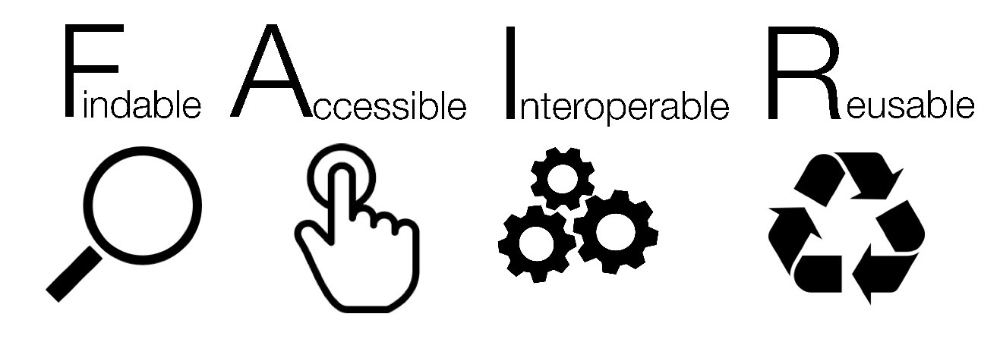
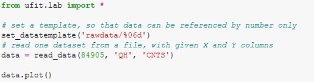
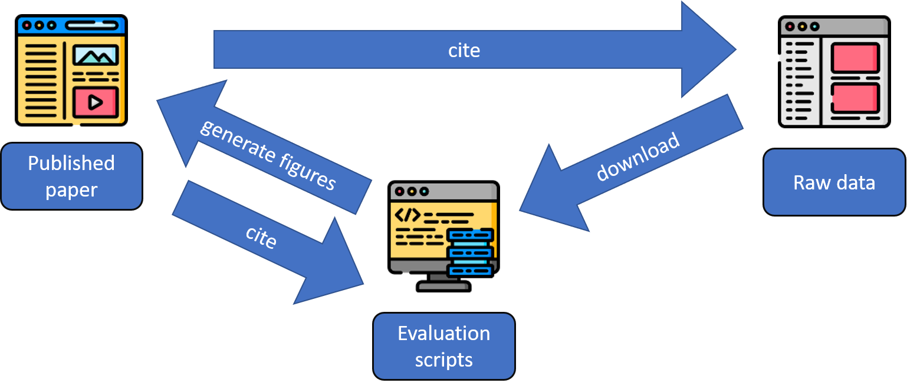

from urllib.request import urlretrieve, urlopen
import json
import os
def download(url, filename):
# Download the file and save it in the current directory
try:
# Remove the file if it exists
if os.path.exists(filename):
os.remove(filename)
# Download and save the file
urlretrieve(url, filename)
print(f"File '{filename}' downloaded successfully.")
except Exception as e:
print(f"An error occurred during downloading file {filename}: {e}")Open data, F.A.I.R.
Connect
slides.cermak.science/opendata

Introduction
What is F.A.I.R.?

- T as Trustworthy
- data are not modified
- metadata are correct (automatically filled)
- all data are published
Findable
- Does someone measured phonons in Silicon?
- Paper
- Findable?
. . .
Accessible
- defined access route to the data (API)
- compare:
- –> machine readable data format
Interoperable
- standardized data formats (described)
- all parameters of the experiment are stored (metadata)
- probably exists some package to read the data

Reusable
- data can be uderstand by others
- even after long time
- great for education
- reuse of scripts - speed up data evaluation
WHY??
Currently it is almost impossible to check published results
Lot of grey/black/wrong approaches in the science.
. . .
Solution?
Spend a lot of hours by properly describing your data.
or
Describe data with scipts!
Describe data with scripts
- idea: one script do all data evaluation for the paper

Script structure
- Download the data
- Analyse it
- Produce figures and tables for paper
See data from the previous year:
Publishing the scripts
Github is perfect for tracking changes, hard to cite
. . .
figshare can clone actuall state of repository
- will make scripts citable (doi)
There should be:
xyz.ipynb(download data, treat data, generate figures)requirements.txt(to be used in 2525)
. . .
Bonus: add paper.tex 💪
Data reusable forever?
In the year 2525
if man is still alive
If woman can survive,
they may find…
your data
. . .
How will computers look like in 2525?
Data reusable forever?
- Jupyter notebook is not enough
- create
requirements.txtwith locked versions of libraries - use binder to test the script: mybinder.org
or:
- use Repo2Docker
- archive whole repository as a docker image
Excercise - publish your own data
Steps
-
Name: specific heat of VCl3 in field
Add README file
License: CC0 or MIT
Sign in for Colab
New Notebook
Download the data
Download the script
Download the data
Import and install libraries
!pip install periodictable
import numpy as np
import matplotlib.pyplot as plt
from LongHCPulse import LongHCPulse
from periodictable import formulaRequirement already satisfied: periodictable in d:\miniforge3\lib\site-packages (1.7.1)
Requirement already satisfied: pyparsing in d:\miniforge3\lib\site-packages (from periodictable) (3.1.2)
Requirement already satisfied: numpy in d:\miniforge3\lib\site-packages (from periodictable) (1.26.4)Read the HC data and calculate HC
mm = formula('VCl3').mass
datafile = "20240530_VCl3_HC_pulses.raw"
DRcalfile = "Puck921.cal"
# find out correct mass
vcl = LongHCPulse(datafile=datafile,calfile=DRcalfile,
sampmass=1,molarmass=mm, useRawTemp=True)
vcl.heatcapacity()**************** LongHCPulse v 1.3.3 *****************
please cite https://doi.org/10.1007/s10909-018-2042-9
******************************************************
- Importing data...
0% 5% 10% 15% 21% 26% 31% 36% 42% 47% 52% 57% 63% 68% 73% 78% 84% 89% 94% 100%
- Computing Heat Capacity...
0% 5% 10% 15% 21% 26% 31% 36% 42% 47% 52% 57% 63% 68% 73% 78% 84% 89% 94% 100%Show the figure
vcl.labels=[]
vcl.shortpulselabels=[]
f,ax = plt.subplots(1,1)
vcl.lineplot(ax,"All", demag=False)
ax.set_ylabel("$C$ $(\\rm{J\\> K^{-1} mol^{-1}})$")
ax.set_xlabel("$T$ (K)")
# Show legend
short_legend=ax.legend(handles=vcl.shortpulselabels,labelspacing = 0,handlelength=1.4,
fontsize=11,frameon=False, bbox_to_anchor=(0.97, 1.0),numpoints=1)
long_legend=ax.legend(handles=vcl.labels,labelspacing = 0,handlelength=1.4,fontsize=11,
frameon=False, bbox_to_anchor=(0.9, 0.42))
ax.add_artist(short_legend)
#FIX that
plt.ylim(0,1)
plt.xlim(0,1)
plt.savefig("fig1.pdf")You did IT!!
Put code to the github
- Enable cats
- File -> Download -> ipynb
- Github -> Add file -> upload
- Edit file -> github.dev
- Add requirements.txt
- What to write there?
. . .
pip freezeTest
Let Binder do the magic
Publish it
Everyone wants to have citable DOI
- Figshare
- Import from github
- …
- Cite it, share it, love it!
THANKS
Tomorrow
Meet at 9:00 (sharp) before the Cryopavilon (Building C)
! Prepare your talks, upload slides online. !